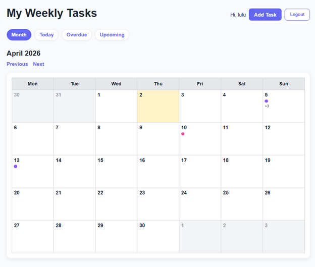
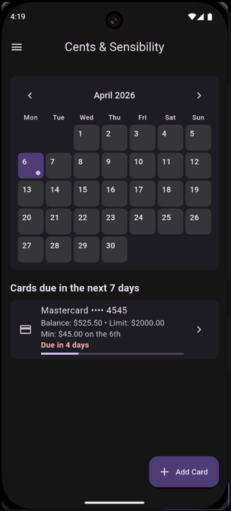
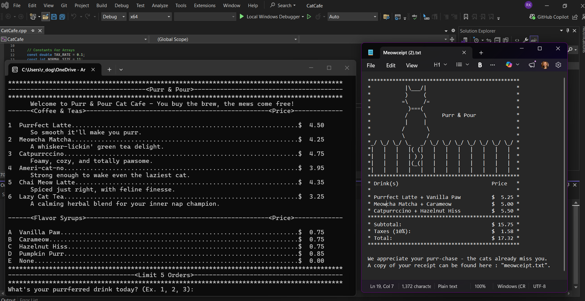
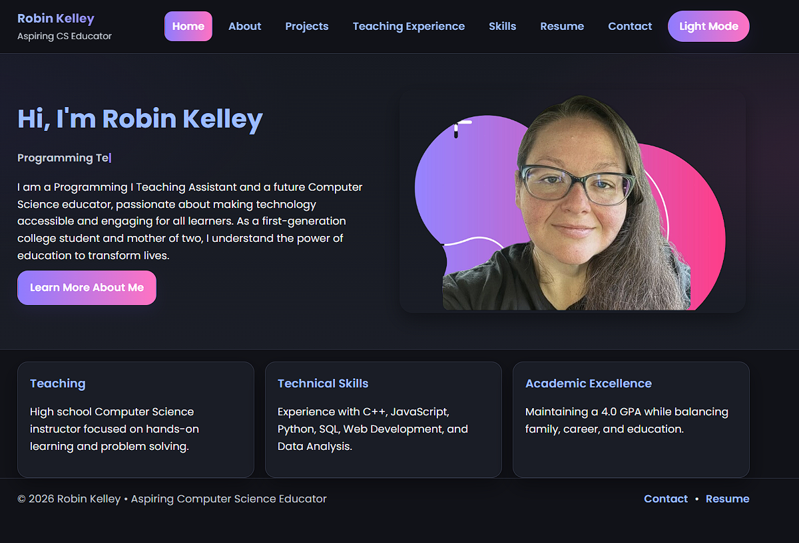

Task Planner Web App
Django, Python, PostgreSQL

A full-featured task management web application built with Django and Python, backed by a PostgreSQL database and deployed live on Render. Designed to manage assignments, work appointments, and personal tasks all in one place.
- Add tasks with subtasks and track progress with visual progress bars
- Calendar view with due date indicators
- Filter tasks by today, overdue, upcoming, or by clicking a specific day
- User authentication with personalized task management
- Currently live and in active use
Cents and Sensibility
Dart, Flutter

A mobile budget application built with Dart and Flutter for managing credit card finances. Designed to give users a clear picture of their upcoming payment obligations in one place.
- Enter and manage credit card information including balances and minimum payments
- Track due dates with a built-in calendar view
- View upcoming payments in a consolidated list
Purr & Pour Cat Cafe
C++

A full business simulation program built in C++ as an end-of-course capstone project for Programming I. The program runs an interactive ordering system for a cat-themed cafe, handling menu display, order processing, tax calculation, and formatted receipt generation.
- Interactive console menu with drinks and flavor syrups
- Order processing with up to 5 items per order
- Automatic tax calculation and total formatting
- Outputs a formatted receipt to a text file
- ASCII art cafe logo for a polished user experience
C++ Teaching Examples
C++
A collection of scaffolding programs created to support instruction in Programming I at Arkansas Tech University. Each example is designed to isolate and demonstrate a single core concept to help freshman students build understanding step by step.
- Conditionals and decision making
- Loops and iteration
- Arrays and data storage
- Functions and modular programming
Portfolio Website

HTML, CSS, JavaScript
This portfolio website, built from scratch as part of a Web Programming course at Arkansas Tech University. Designed with accessibility, responsiveness, and clean design in mind.
- Responsive layout that works across all screen sizes
- Dark mode with flash-free theme persistence using localStorage
- Accessible navigation with skip links and ARIA labels
- Typed.js animated hero tagline
- Formspree-powered contact form